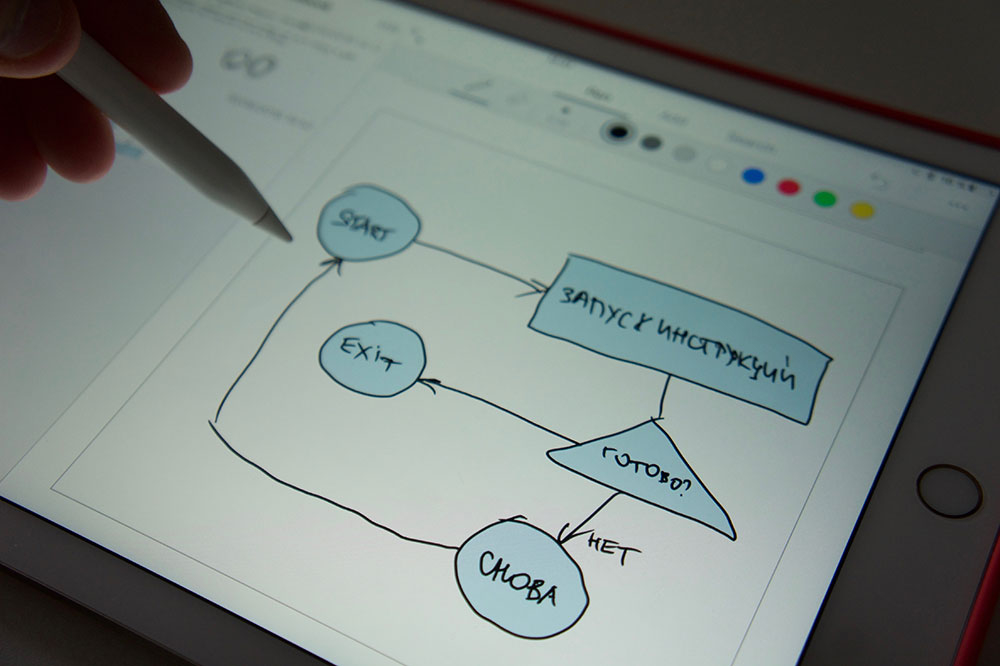

"Онлайн" распознавание

Распознавание текста может производиться «онлайновым» методом
считыванием движений кончика ручки, к примеру, по поверхности
специального компьютерного экрана.
Интерфейс онлайнового распознавания обычно состоит из:
-
ручки или стилуса, которым пользователь осуществляет ввод
-
поверхности, чувствительной к касаниям, которая может быть интегрирована с дисплеем
-
программного обеспечения, которое интерпретирует движения стилуса по пишущей поверхности, переводя получившиеся линии в цифровой текст
Режимы распознавания рукописного текста:
-
Слитное распознавание позволяет пользователю писать слова и даже целые предложения привычным для него образом - не отрывая руки от "листа"
-
Побуквенное распознавание позволяет распознавать только ожин символ за определённый промежуток времени. Пытаться вводить несколько букв не имеет смысла - программа попытается распознать их как один символ
-
Интеллектуальное распознавание позволяет корректировать результаты распознавания
прямо в процессе письма. -
Раздельное распознавание даёт программе сигнал, что каждый написанный вами штрих будет распознан как единый символ. Этот способ немного схож с Побуквенным распознаванием
Специальные функции некоторых программ:
-
Задержка распознавания - позволяет установить время, которое должно пройти с момента отрыва пальца от экрана, чтобы программа начала распознавать текст. Очень полезно для не слишком быстрых людей при использовании побуквенного или раздельного режимов.
-
Варианты распознавания - если вы поставите галочку около этого пункта, то программа будет пытаться предугадать то, что вы пишете на основе уже введённых ранее слов.
-
Прописи - очень полезный раздел, особенно для тех, у кого не рядовой почерк (например, врачам). Он позволяет добавлять варианты написания для всех букв, цифр и символов. Например, вы не можете угадать, что это за буква, то программа - тем более. Для этого и нужны прописи. Вы просто указываете более точное написание каждой буквы, и программа больше не затрудняется в распознавании вашей грамоты!
-
Пользовательский словарь - позволяет добавлять те слова, которые не присутствуют в стандартных словарях. Например, сленговые слова или специфические профессиональные выражения.